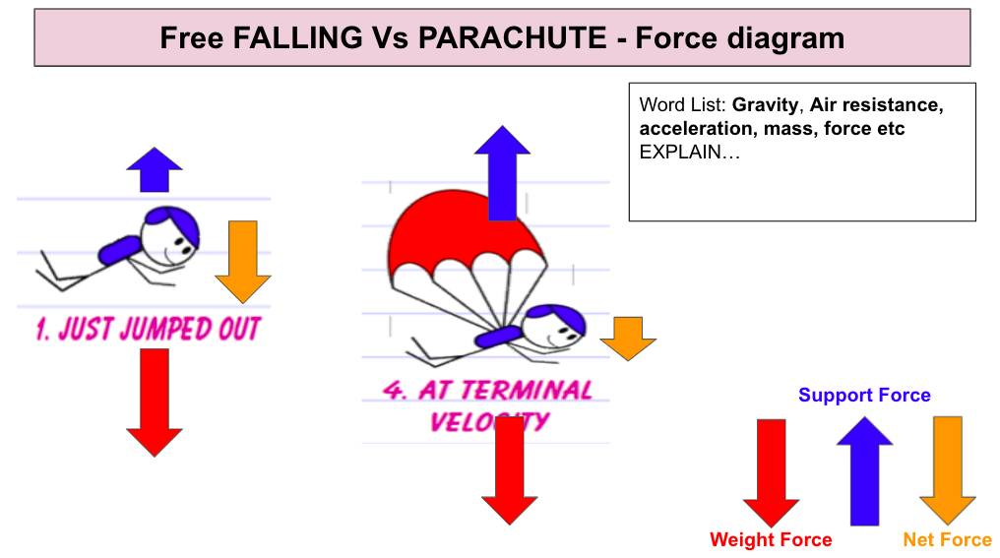

This is a Diagram of the force affecting someone sky diving with and without a parachute.
As you can see, when the jumper first jumps out the weight force overweighs almost everything, it also has a pretty high net force. After the jumper pulls the parachute, the weight force stays the same because gravity doesn't change, the net force then goes down and the support force (the air getting caught in the parachute) grows so that it is about even with the weight force, therefore allowing the sky diver to land safely